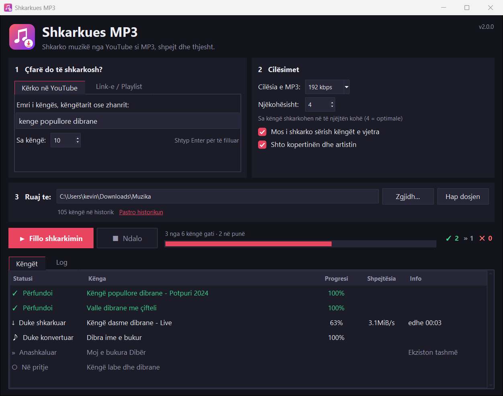

Ky program shkarkon këngë nga YouTube dhe i ruan në kompjuter si MP3, me kopertinë dhe emrin e artistit.
Nuk ka nevojë për instalim: mjafton ta hapësh.
Hapja e parë
Nxirr skedarët nga zip-i. Kliko me të djathtën mbi zip-in → Extract All… (Nxirr të gjitha) → Extract.
Mos e hap programin direkt nga brenda zip-it.
Hap ShkarkuesMP3.exe me dy klikime. Hera e parë zgjat 5–10 sekonda. Kjo është normale.
Nëse del ekrani blu "Windows protected your PC", kliko More info dhe pastaj Run anyway.
Kjo ndodh sepse programi nuk është i nënshkruar dixhitalisht, jo sepse ka virus.
KëshillëZhvendose ShkarkuesMP3.exe te Desktop-i ose te një dosje e jotja,
që ta gjesh lehtë herën tjetër.
Si shkarkoj këngë

Dritarja e programit gjatë një shkarkimi
Çfarë do të shkarkosh? • Te skeda Kërko në YouTube: shkruaj emrin e këngës, këngëtarit ose zhanrit
(p.sh. kenge popullore dibrane) dhe zgjidh Sa këngë do.
• Ose te skeda Link-e / Playlist: ngjit një ose më shumë link-e YouTube, një për rresht.
Mund të ngjitësh edhe link playlist-e, dhe programi i shkarkon të gjitha këngët e saj.
Cilësimet (mund t'i lësh siç janë):
• Cilësia e MP3: 192 kbps është e mirë për shumicën. 320 kbps jep cilësinë më të lartë, por skedarë më të mëdhenj.
• Njëkohësisht: sa këngë shkarkohen në të njëjtën kohë. 4 është optimale. Nëse interneti është i dobët, vendos 2.
Ruaj te: dosja ku do të ruhen këngët. Si parazgjedhje është Downloads\Muzika.
Kliko Zgjidh… për ta ndryshuar.
Shtyp ▶ Fillo shkarkimin, ose thjesht Enter pasi ke shkruar kërkimin.
Kur të përfundojë, programi pyet nëse do ta hapësh dosjen me këngët. Mund ta hapësh kurdo me Hap dosjen.
Çfarë tregon tabela e këngëve
Statusi
Çfarë do të thotë
○ Në pritje
Kënga është në radhë.
↓ Duke shkarkuar
Po shkarkohet. Shikon përqindjen, shpejtësinë dhe sa kohë mbetet.
♪ Duke konvertuar
Po kthehet në MP3. Zgjat pak sekonda.
✓ Përfundoi
Kënga është gati në dosje.
» Anashkaluar
E ke shkarkuar më parë, prandaj nuk shkarkohet sërish.
✕ Dështoi
Nuk u shkarkua. Kliko dy herë mbi të për të parë arsyen.
– Anuluar
E ndale me butonin ■ Ndalo.
Lart djathtas shikon numrat: ✓ të përfunduara,
» të anashkaluara, ✕ të dështuara.
Pyetje të shpeshta
Si e ndaloj shkarkimin?
Shtyp ■ Ndalo. Këngët që kanë përfunduar mbeten në dosje.
Pse një këngë "Anashkalohet"?
Programi mban mend çdo këngë që ke shkarkuar, që të mos e shkarkojë dy herë. Nëse e do sërish,
hiq shenjën te Mos i shkarko sërish këngët e vjetra, ose kliko Pastro historikun
(kjo nuk fshin asnjë MP3).
Shumë këngë dështojnë njëkohësisht
Mesazhi
Zgjidhja
Nuk ka internet / "Unable to download"
Kontrollo lidhjen me internetin dhe provo sërish.
"Video unavailable"
Video është fshirë, private ose e bllokuar në vendin tënd. Provo një tjetër.
"Sign in to confirm…", "HTTP Error 403", ose pothuajse gjithçka dështon
YouTube ka ndryshuar diçka dhe programi duhet përditësuar. Kërko një version të ri te personi që ta dërgoi.
Antivirusi e bllokon programin
Disa antivirusë dyshojnë për programe të vogla që nuk janë të nënshkruara. Mund ta shtosh
ShkarkuesMP3.exe te përjashtimet (exclusions) e antivirusit.
Ku i gjej këngët?
Te dosja që shfaqet te Ruaj te (zakonisht Downloads\Muzika). Kliko Hap dosjen.
Këngët mund t'i kalosh në telefon, USB ose makinë si çdo MP3 tjetër.
ShënimShkarko vetëm muzikë që ke të drejtë ta shkarkosh, p.sh. për përdorim personal aty ku ligji e lejon.